The Transaction menu is where receipts and vouchers are made. Collection records the money that the municipality receives, and gives an official receipt (OR) for each payment. Disbursement records the money that the municipality pays out, with a disbursement voucher (DV). This section explains each page, each button and each message.
Open the sidebar and click Transaction. It has two groups. Collection has seven pages: Issuance of Official Receipt(OR), Business Permit(OR), Building Permit, Community Tax Certificate(CTC) - Ind, Community Tax Certificate(CTC) - Corp, Burial Permit and Fee Receipt and Online Request. Disbursement has one page, Disbursement Voucher(DV).
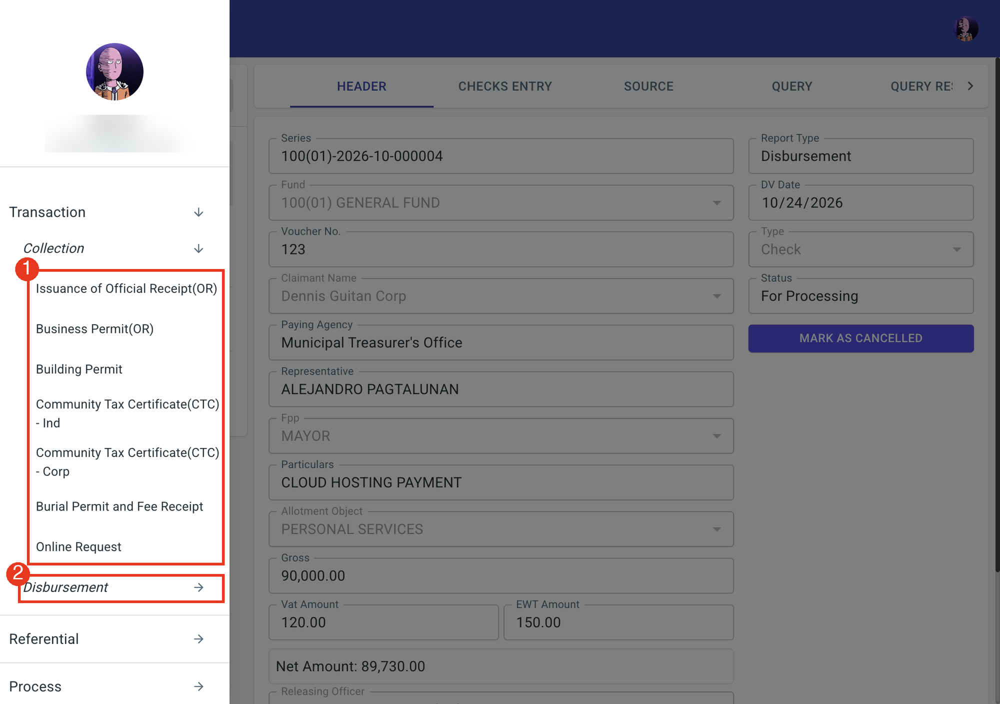
Six of the Collection pages (Issuance, Business Permit, Building Permit, CTC Ind, CTC Corp and Burial Permit) work in the same way. A receipt is never typed from nothing. It always starts from a receipt number that already exists in a booklet.
The collector must also be one of the officers assigned to your user (Section 1.2.6). If not, the receipt is refused.
When you check a receipt number, TIS answers with one of these windows. Each shows a red circle with an exclamation mark, the message and an OK button.
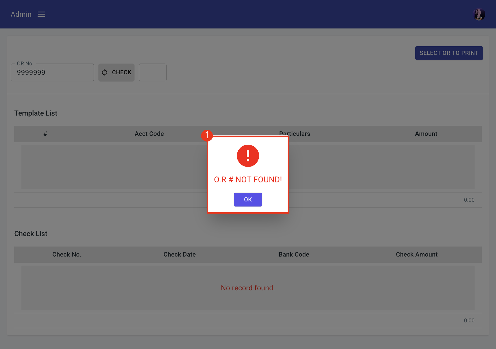
When you check a number that was already used, TIS shows the saved receipt and these buttons at the top right:
This page makes an official receipt for any payment that does not have its own page. When you open it, only the OR No. box, the Check button and the Select OR To Print button show. Below are the Template List (the accounts paid) and the Check List (the checks that paid it).
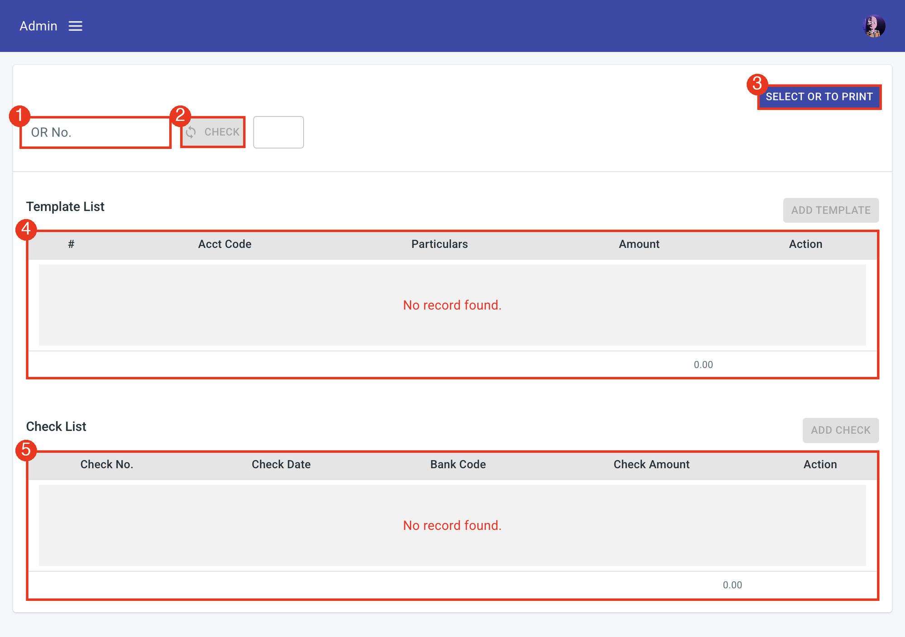
Click Select OR To Print to see the receipts that were issued and can still be printed or copied. The list shows the OR Date, the OR No. and the Payor. Type in the Search OR No. or payor box to find one, then click Select. A preview of the receipt opens with a Print button. If there is nothing to print, the message No OR to print appears.
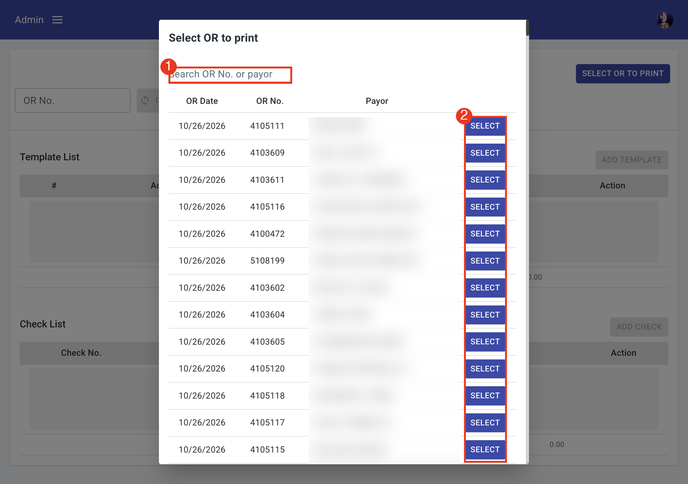
Type a receipt number of an open booklet and click Check. The form opens. The boxes are:
| Box | What to do |
|---|---|
| OR No. | The receipt number that you checked. |
| Payor | Required. The name of the person or company that pays. |
| Gender | Required. A list: Male or Female. |
| Address | Required. It starts as OAS, ALBAY. |
| Document Date and OR Date | Required. Both start as today's date. |
| Business Type, Business Info, Remarks | They start as N/A. Change them when they apply. |
| Collection Type | Required. A list of the collection types (Section 2.7). The choice decides which accounts are added. |
| Fund Code | Shown by TIS after the collection type is chosen. |
| Gray box at the right | Liq Officer, Collector, Form Type, RCD No. and RCLO No. from the booklet. It cannot be changed. |
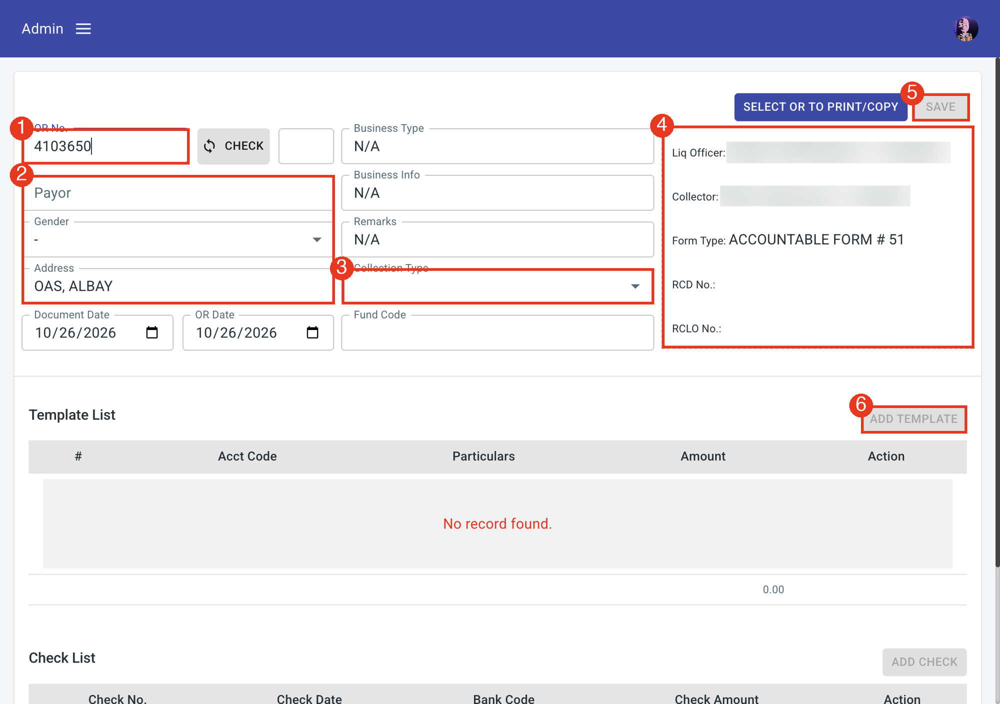
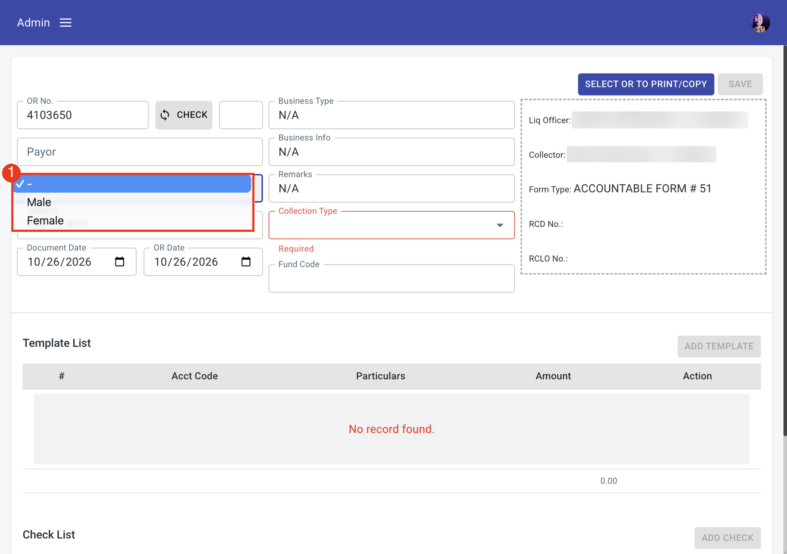
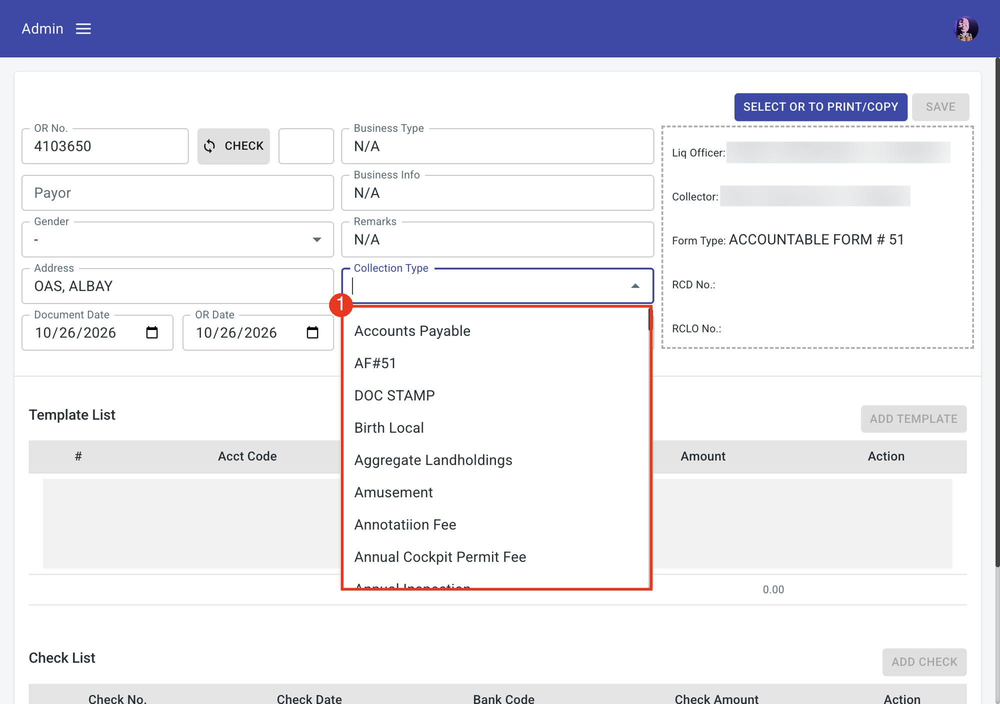
When you choose a collection type, TIS asks Do you want to add the template? Click Yes to add all the OR template lines of that collection type to the Template List. Each line shows the account code, the particulars and the amount, and the total is shown below. Adding template to table success appears. The Add Template button is gray until a template has been added. After that it adds one more account by hand (account code, account group, amount and fund) and shows Template added to list successfully.
Step 1. Click the Collection Type box and choose a collection type from the list. The Fund Code then fills in by itself (here 100(01)).
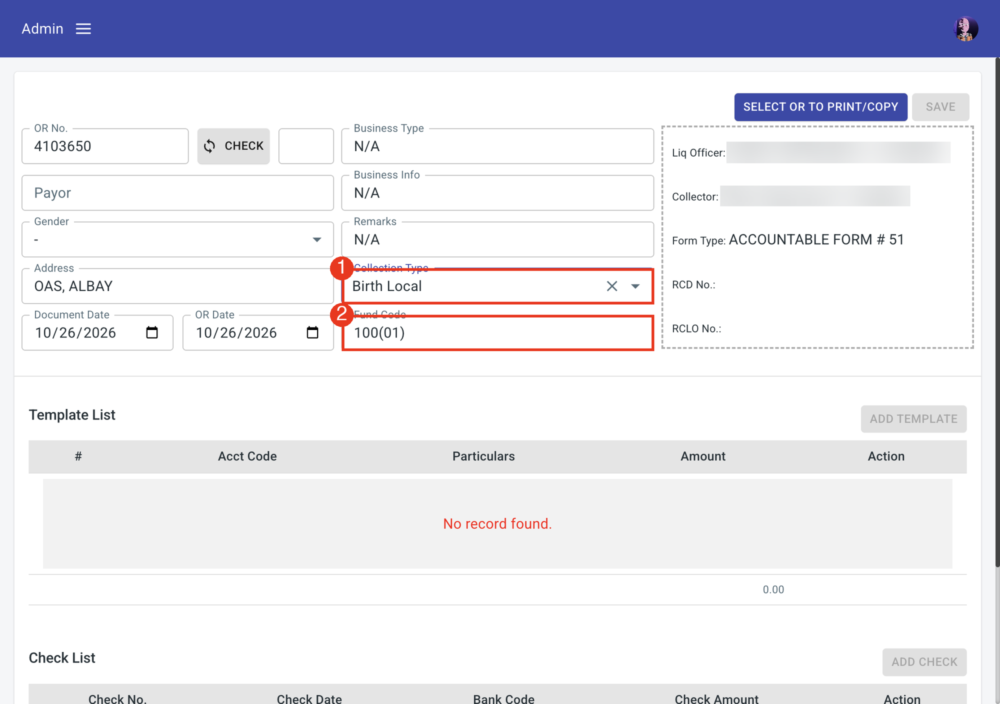
Step 2. At once TIS asks the question. Click Yes to add the template, or No to leave without adding it.
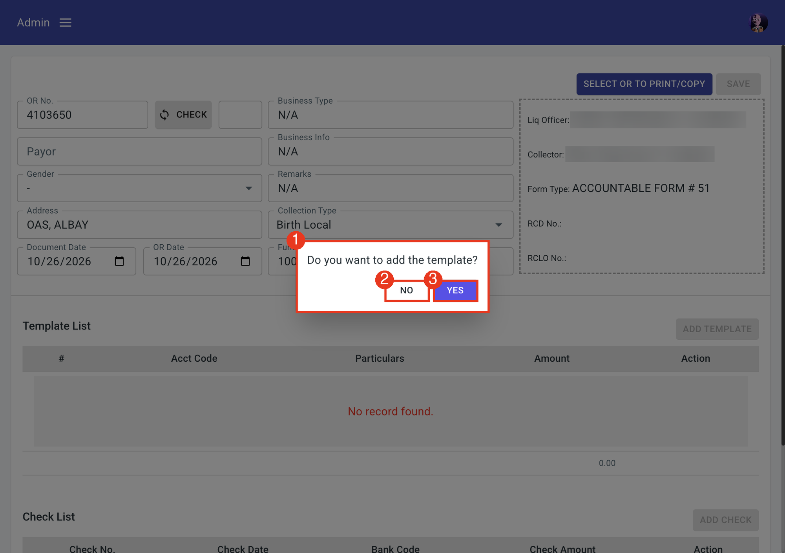
Step 3. After Yes, the lines fill the Template List.
For example, the collection type Birth Local adds the lines Doc Stamp (4-02-01-020-37, 30.00) and Birth Cert. (Local) (4-02-01-040-10, 50.00), a total of 80.00.
When a payment is made by check, click Add Check and fill in Check No., Check Date, Bank Code and Check Amount. Check created successfully appears. A check row has a trash can to remove it. The Add Check button is gray until a receipt is open.
This is a receipt that was already issued, opened with Check. The form is read-only and the buttons of Section 3.2.3 show at the top. The Template List shows the accounts and the total of the receipt.
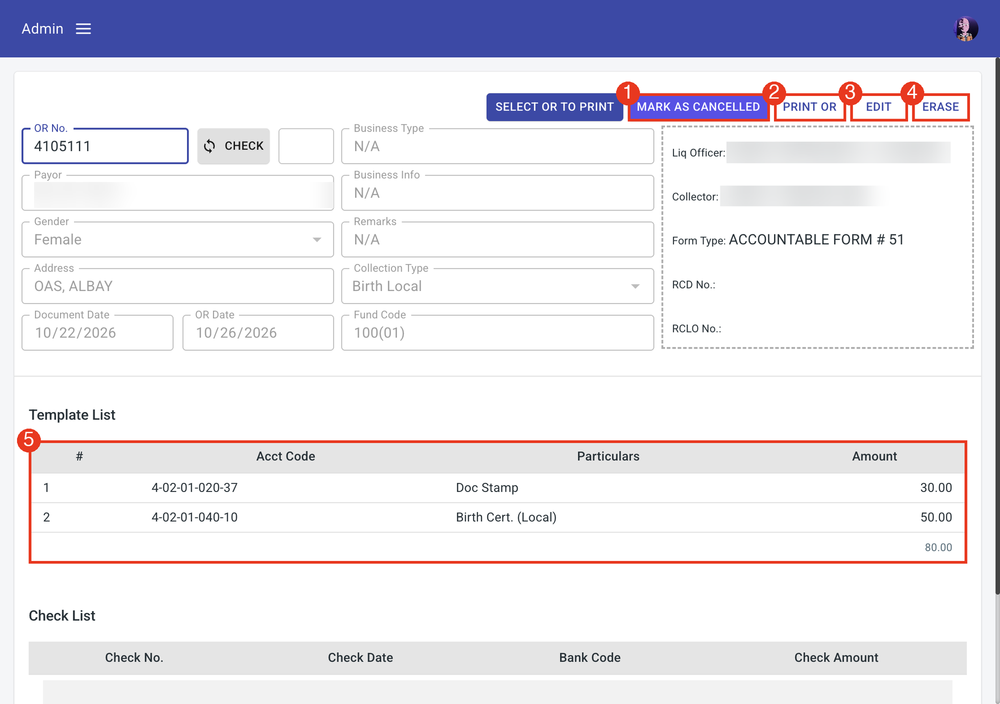
This page makes the official receipt for a business permit. It works like Issuance (Section 3.3), with these differences: the collection type is fixed to BUSINESS, the gender box is named Sex, and the accounts come from the assessment of the business.
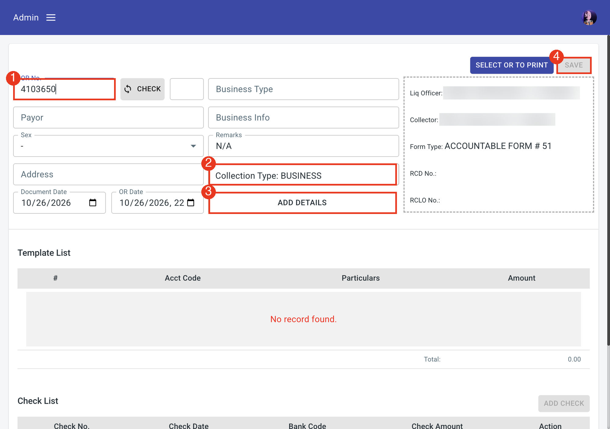
Click Add Details to find the business. The window Filter To Display offers two ways to search. Tick Search for Business and type the Business Name, or tick Search for Assessment Code and type the Assessment Code. Then click Filter. TIS looks in the assessments of the Business Permit system and shows the matches in a list. Click Retrieve on the right business. TIS then fills in the business name and the payor, and adds the assessed fees to the Template List for this receipt number.
The buttons of a saved business receipt are the same as in Section 3.2.3. Mark As Cancelled shows Business cancelled successfully and Erase shows Business permit deleted successfully.
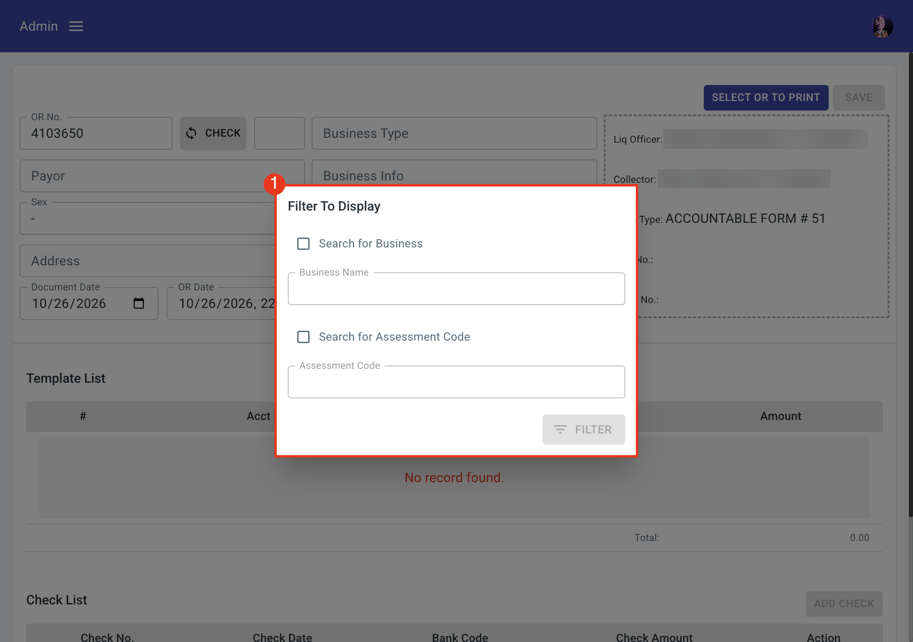
This page makes the official receipt for a building permit. The form is short: the receipt number, the Payor, the dates, and Add Details. The application is taken from the building permit applications.
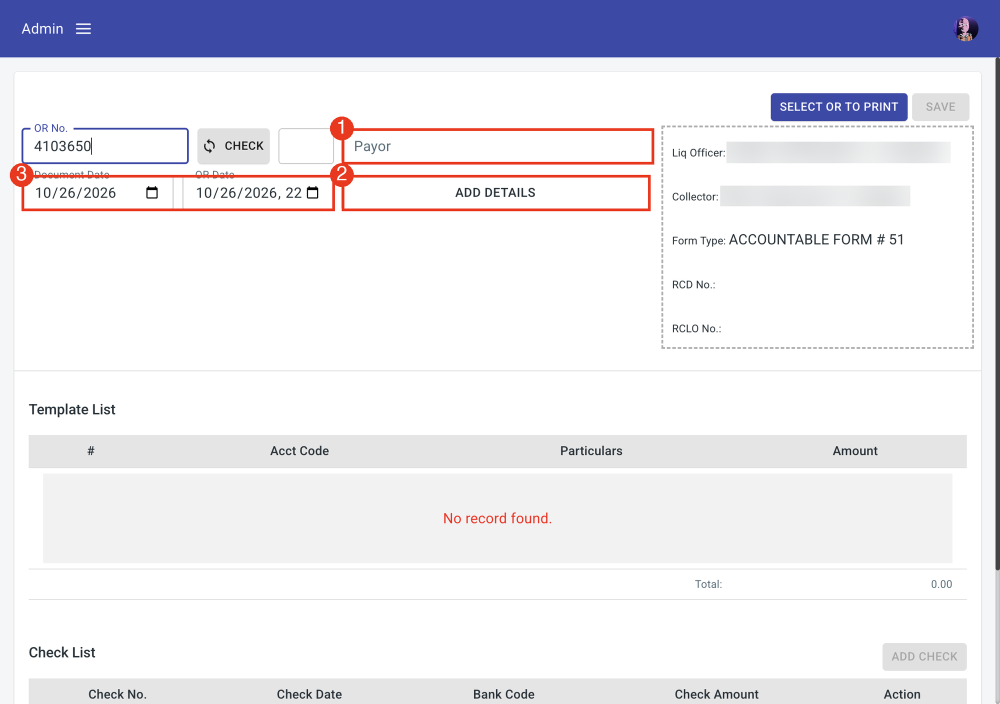
Click Add Details. In the window Filter To Display, tick Search for Application No. and type the Application No., or tick Search for Owner and type the Owner, then click Filter. Click Retrieve on the right application. The owner becomes the payor and the fees of the application fill the Template List. Please select a filter type and No record found appear as on the Business Permit page.
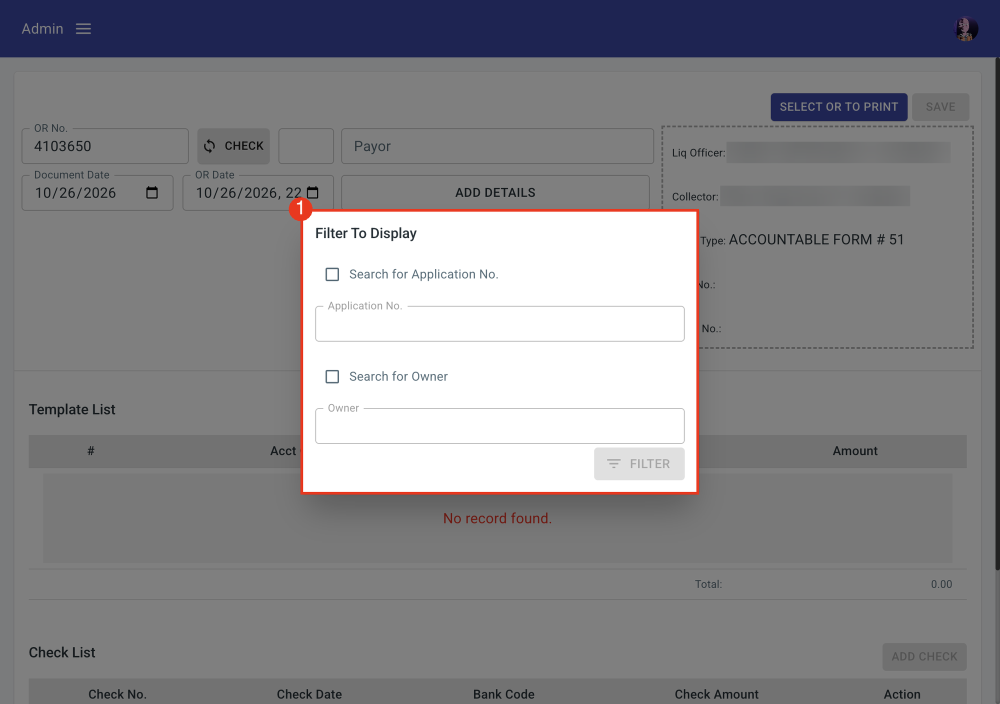
This page makes a community tax certificate for a person. It starts with the CTC No. of an open booklet of the form type COMMUNITY TAX CERTIFICATION. The gray box shows the CTC Type: Individual and the fund.
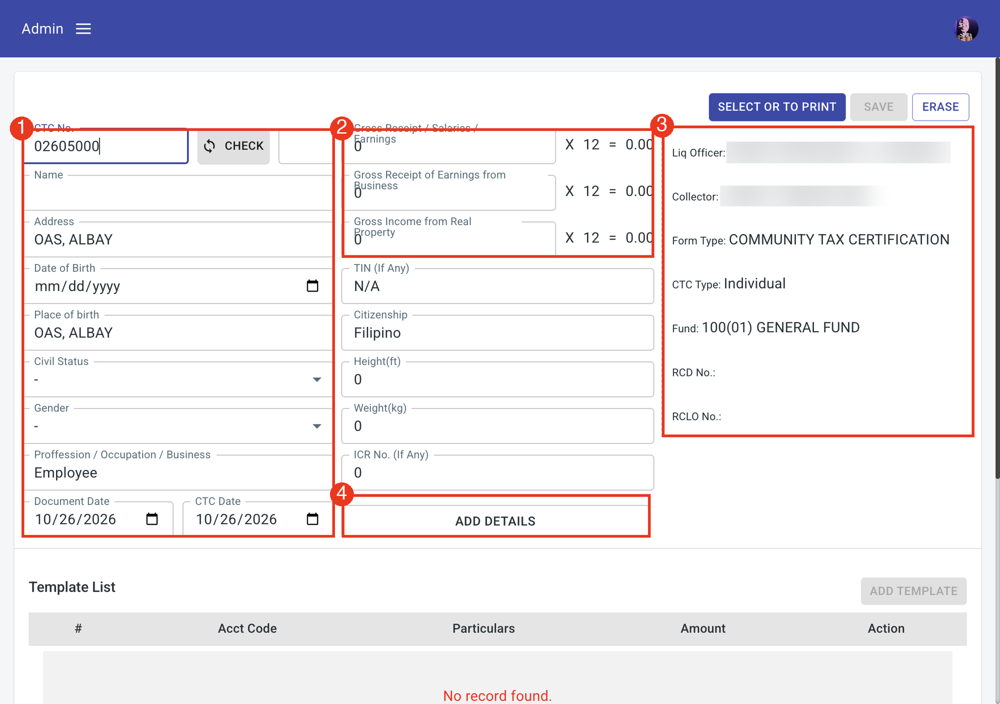
| Box | What to do |
|---|---|
| Name, Address | The person. The address starts as OAS, ALBAY. |
| Date of birth, Place of birth, Citizenship | Date of birth is typed or chosen from a calendar. Place of birth starts as OAS, ALBAY, citizenship as Filipino. |
| Civil Status, Gender | Lists. |
| Profession / Occupation / Business | Starts as Employee. |
| TIN (If Any), ICR No. (If Any), Height (ft), Weight (kg) | TIN starts as N/A, the others as 0. |
| Gross Receipt / Salaries / Earnings; Gross Receipt of Earnings from Business; Gross Income from Real Property | The yearly figures. The page shows each one multiplied by 12 with the result beside it. |
| Document Date, CTC Date | Start as today's date. |
Choose the details with Add Details and add the accounts with Add Template. The question is Do you want to add the CTC Ind template?. CTC Ind created successfully follows the save, and Erase asks Are you sure to delete this CTC Ind? and shows CTC Ind deleted successfully. This page also has an Erase button beside Save.
This page makes a community tax certificate for a company. It works like the CTC Ind page, with a CTC No. box, a Check button and the Template List and Check List.
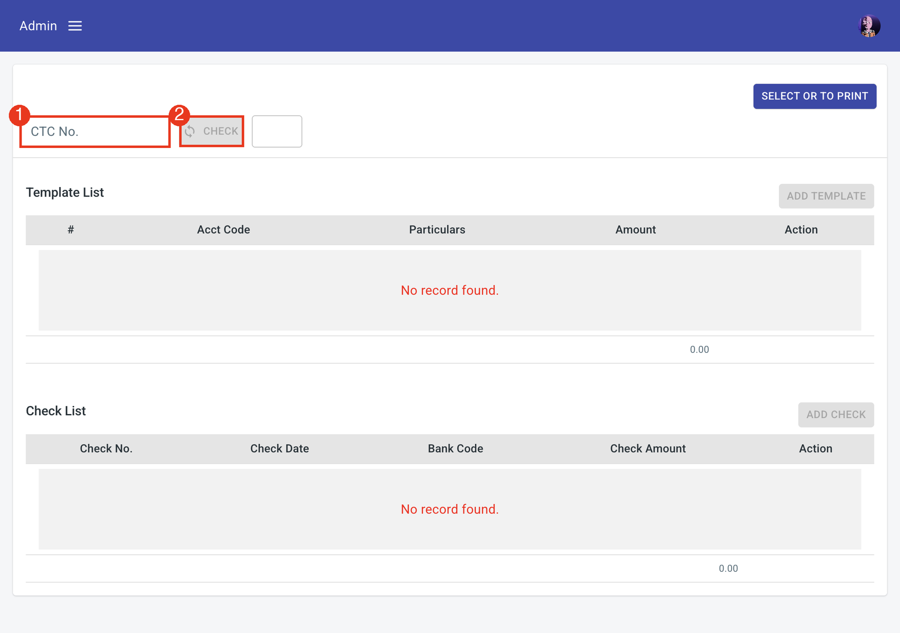
A new number opens a form with these boxes (from the code): Company's Name, Place of Business, Kind of Organization, Kind/Nature of Business, Place of Incorporation, Date of Reg/Incorporation, TIN (If Any), Assessed Value of Real Property, Gross Receipts / Salaries / Earnings, Document Date and CTC Date, and the gray box of the booklet. The messages are Do you want to add the CTC Corp template?, CTC Corp created successfully, CTC Corp cancelled successfully, Are you sure to delete this CTC Corp? and CTC Corp deleted successfully.
This page makes the official receipt for a burial permit. It uses the form type MUNICIPAL BURIAL PERMIT AND FEE RECEIPT. It works like the Issuance page, with the OR No. box, Check, Add Template and Add Check.
The form (from the code) has the boxes Payee (S/F/M), Gender, Deceased Name (S/F/M), Deceased Gender, Nationality, Cause Death, Date Death (with Day, Month and Year), Cemetery or Name of Cemetery (the cemetery list of Section 2.8), Document Date and OR Date. The messages are Burial Permit created successfully, Are you sure to delete this burial? and Burial deleted successfully.
This page shows the requests that people made online (for example a burial permit) and are waiting to be paid at the treasury. The list shows the Payor#, the Service Type and an eye icon. Type in Search payor to find one. Scan QR opens a request by scanning its QR code, and Upload QR opens it from a picture of the QR code.
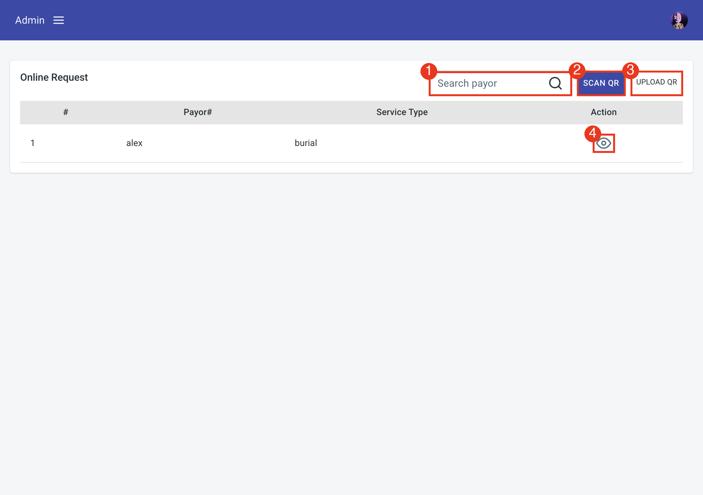
Click the eye icon to open the Request Details window. It shows the Request Information (the payee, the sex, the deceased, the cemetery, the dates, the nationality and the cause of death) and the Breakdown, which is a table of the accounts with their amounts and a total.
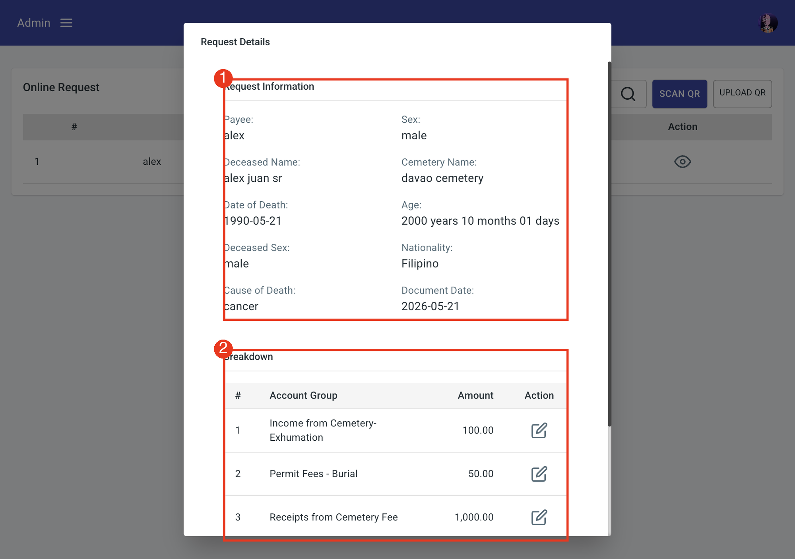
Scroll down in the window. Each breakdown row has an Edit icon that opens Editing Amount to change the amount of that row; it shows Template updated successfully. Under the table are the Reference No. and the Status: Cancelled, Approved or Pending. Two buttons follow:
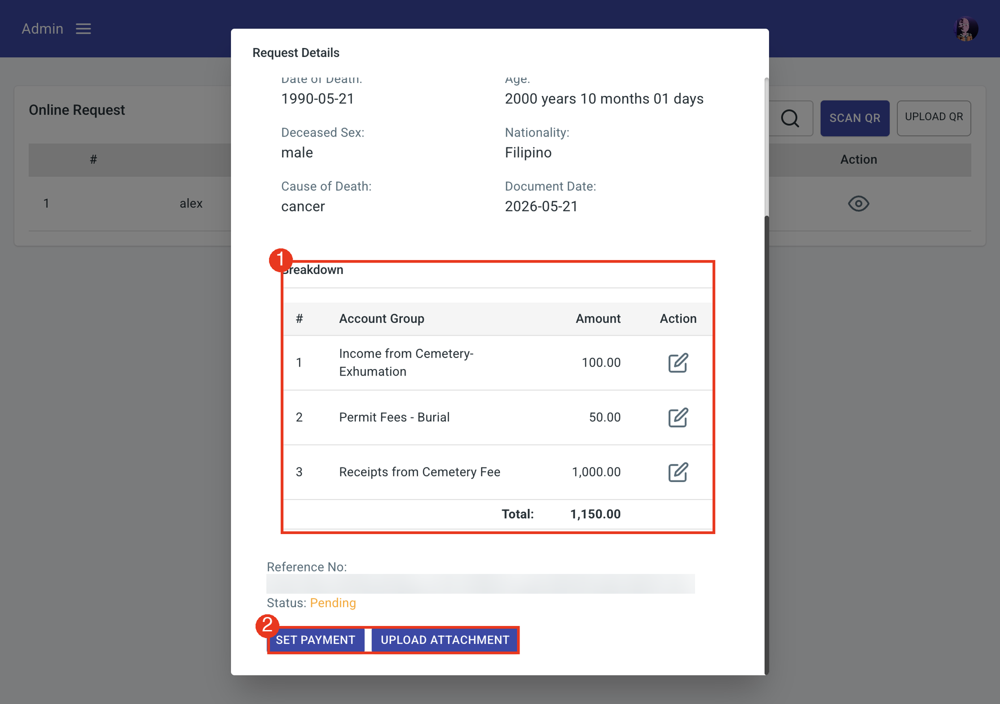
This page records a payment that the municipality makes (for example to a supplier) on a disbursement voucher. The left side lists the vouchers. The right side has tabs for the voucher that is selected: Header, Checks Entry, Query, Query Result, RCI and Preview Print.
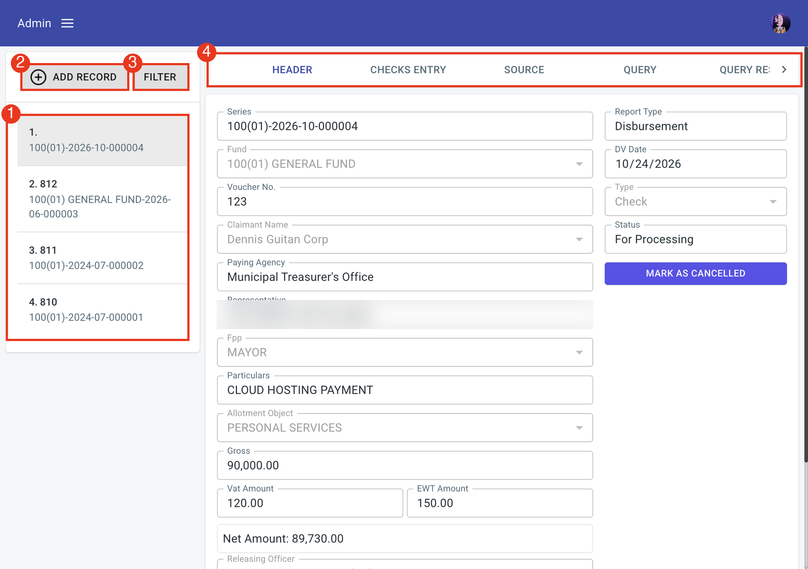
The Header tab has the main details of the voucher. In a new record fill in:
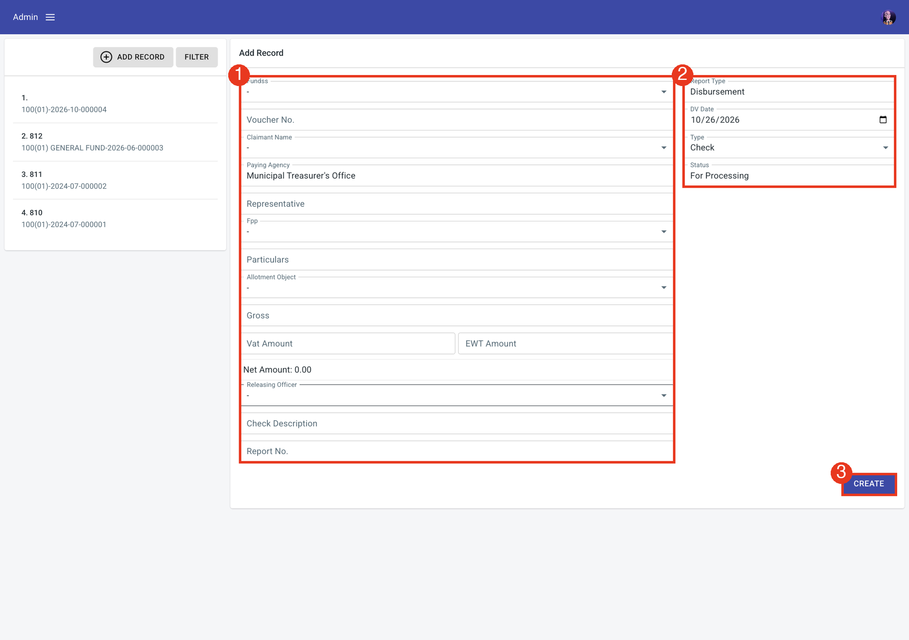
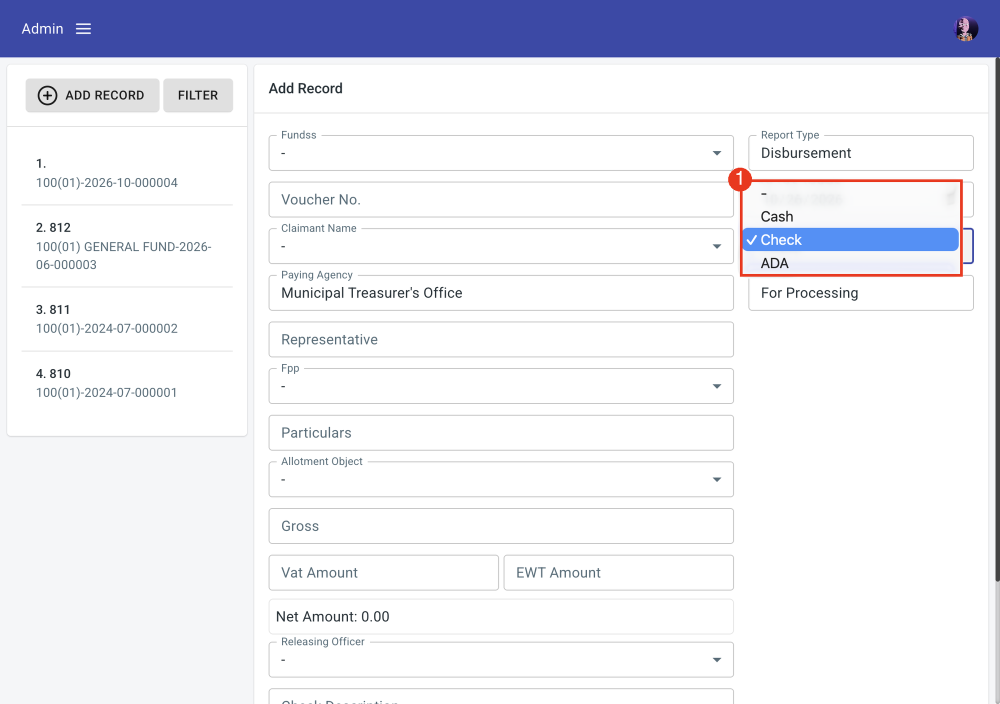
When the form is complete, click the Create button at the bottom right of the form (boxed 3 in the figure) to save the voucher. Disbursement created successfully appears. On a saved voucher, the button Mark As Cancelled changes the status from For Processing to Cancelled (and back). Status updated to Cancelled appears, or Failed to update status when it fails.
This tab lists the checks of the voucher. Click Add to open Add Check Entry. Type the Check No. and the Obligation No. TIS looks the check number up in the check booklets of the Referential menu (Section 2.6.2). Check No. not found! appears when the number is not in a booklet and Check No. already used! when it was used. Check entry created successfully follows a good entry.
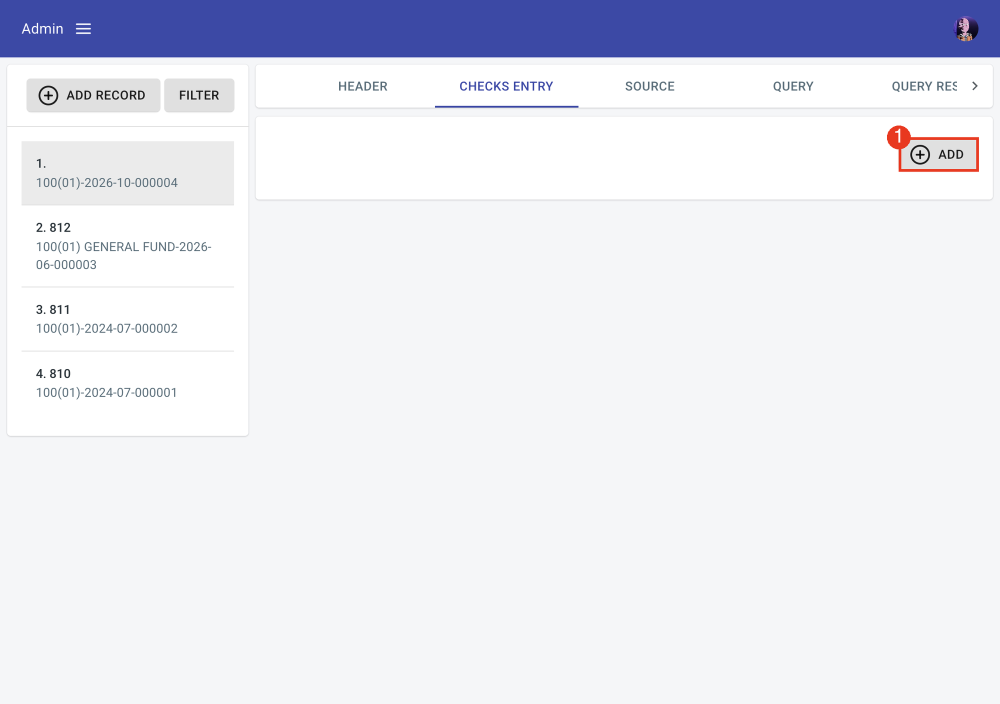
The Query tab searches the vouchers. Filter opens Filter To Display to choose what to look for, Retrieve Query loads the vouchers and Clear Query empties the table. The columns are Released, Fund, DV Date, Name, Voucher No., Obligation No., Check Number, Particulars, Total, Tax and Gross. Scroll the table sideways to see all of them. The Query Result tab shows the result of the query.
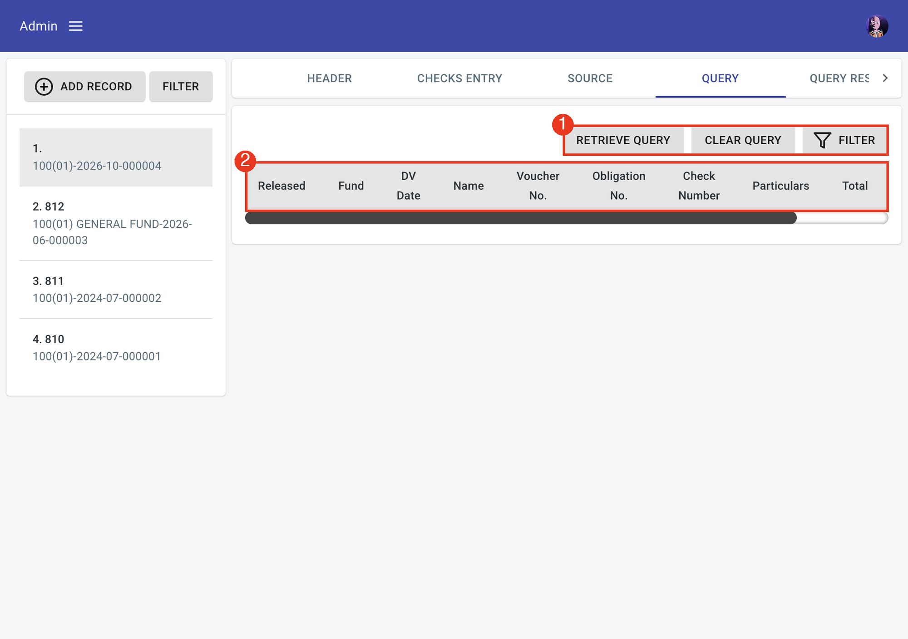
The RCI tab shows the Report of Checks Issued for the Municipal Government of Oas. Click Filter and choose the Date From, the Date To and the Fund (or All Funds). Date from and date to are required and Date from cannot be after date to appear when the dates are wrong, and Failed to retrieve RCI records when the report cannot be loaded. The report lists each check (date, serial number, DV or payroll number, office, payee, nature of payment and amount) and ends with the certification of the municipal treasurer. The treasurer's name comes from the active record of the Treasurer page (Section 2.6.12). Export saves the report as a file and Print prints it.
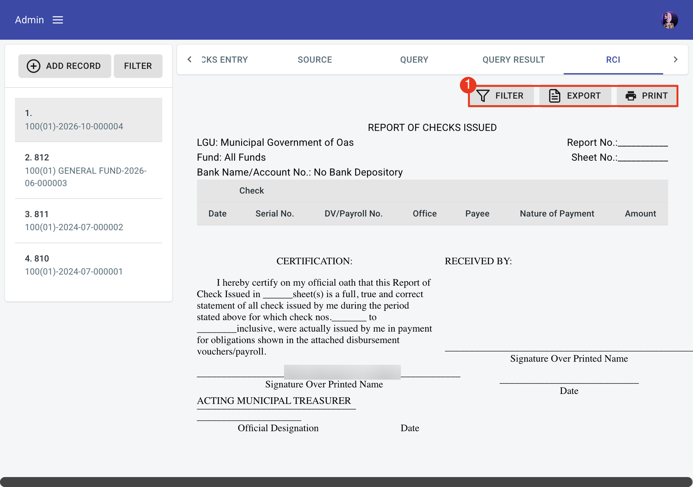
The Preview Print tab shows the printed form of the voucher: Republic of the Philippines, Province of Albay, Municipal Government of Oas, the voucher number, the mode of payment, the payee, the address, the explanation, the amount and four signature blocks: A. Certified (the accountant), B. Certified (the treasurer), C. Approved for payment (the mayor) and D. Received Payment. The three names come from the active records of the Accountant, Treasurer and Mayor pages of the Referential menu (Section 2.6.11 to 2.6.13). Click Print to print the voucher.
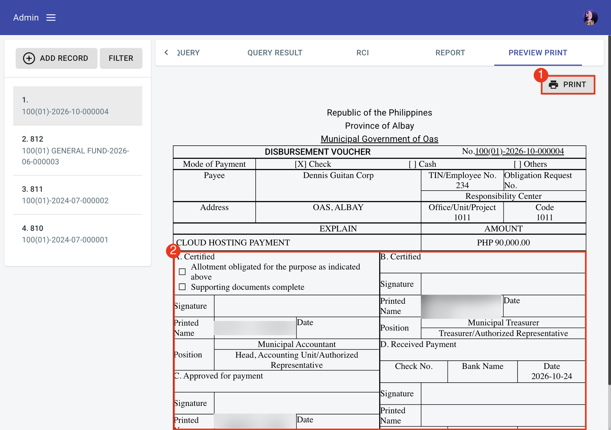